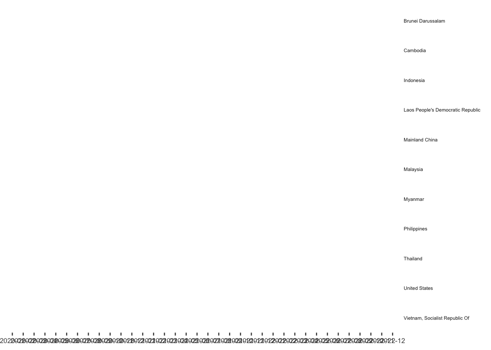

pacman::p_load(dplyr, tidyverse, ggplot2, lubridate, readxl, knitr,CGPfunctions)Take-home Exercise 4
take-home exercise
This take home exercise aims to uncover the impact of COVID-19 as well as the global economic and political dynamic in 2022 on Singapore bi-lateral trade by using various analytical visualisation techniques.
1. Overview
The COVID-19 pandemic has significantly impacted the global trade and economy since its outbreak in Year 2020. In this study, we will analyse the import and export volume between Singapore and other ASEAN countries, US as well as China.
2. Data Processing
The data used for this take-home exercise is extracted from SingStat, in excel spreadsheet format.
1.1. Loading Libraries
1.2. Loading Data
import <- read_excel('/Users/minghaooo/mtlmh34/ISSS608-VAA-mh/Data/outputFile.xlsx', sheet='T1',
skip = 9, n_max = 120)
export <- read_excel('/Users/minghaooo/mtlmh34/ISSS608-VAA-mh/Data/outputFile.xlsx', sheet='T2',
skip = 9, n_max = 120)1.3. Data Wrangling
In data wrangling, the following tasks are performed: - focus on only trades with ASEAN countries, US and China - focus on only data in 2020-2022 - transpose the data to long table - join import and export data
trade_countries <- c("Brunei Darussalam","Indonesia","Malaysia","Philippines",
"Thailand","Myanmar","Cambodia","Laos People's Democratic Republic",
"Vietnam, Socialist Republic Of", "Mainland China", "United States")
processing <- function(df){
df$'Data Series' <- str_replace(df$'Data Series', ' \\(Thousand Dollars\\)', '')
df <- df %>%
rename('Country' = 'Data Series') %>%
filter(Country %in% trade_countries) %>%
select('Country'|starts_with('2022')|starts_with('2021')|starts_with('2020')) %>%
pivot_longer(!Country, names_to = 'Month', values_to = 'Thousands')
return(df)
}
import_by_country <- processing(import)
export_by_country <- processing(export)
# Merge two dataset, sort by country and month ascending
import_export_by_country <- left_join(import_by_country,export_by_country,
by=join_by('Country', 'Month')) %>%
mutate(Month=substr(ym(Month),1,7)) %>%
arrange(Country,Month) %>%
rename('Import' = 'Thousands.x', 'Export' = 'Thousands.y')The dataframe after pre-processing is as follows:
kable(head(import_export_by_country), 'pipe')| Country | Month | Import | Export |
|---|---|---|---|
| Brunei Darussalam | 2020-01 | 278270 | 92138 |
| Brunei Darussalam | 2020-02 | 242796 | 98823 |
| Brunei Darussalam | 2020-03 | 70923 | 92062 |
| Brunei Darussalam | 2020-04 | 96185 | 105793 |
| Brunei Darussalam | 2020-05 | 49763 | 64689 |
| Brunei Darussalam | 2020-06 | 36456 | 114980 |
import_export_by_country_longer <- pivot_longer(import_export_by_country,cols=ends_with('port'), names_to = 'Type', values_to = 'Thousands')
import_export_by_country_longer# A tibble: 792 × 4
Country Month Type Thousands
<chr> <chr> <chr> <dbl>
1 Brunei Darussalam 2020-01 Import 278270
2 Brunei Darussalam 2020-01 Export 92138
3 Brunei Darussalam 2020-02 Import 242796
4 Brunei Darussalam 2020-02 Export 98823
5 Brunei Darussalam 2020-03 Import 70923
6 Brunei Darussalam 2020-03 Export 92062
7 Brunei Darussalam 2020-04 Import 96185
8 Brunei Darussalam 2020-04 Export 105793
9 Brunei Darussalam 2020-05 Import 49763
10 Brunei Darussalam 2020-05 Export 64689
# … with 782 more rowsimport_export_by_country_longer %>%
mutate(Month = factor(Month)) %>%
filter(grepl('01',Month)|grepl('06',Month)|Month=='2022-12') %>%
newggslopegraph(Month, Thousands, Country,
Title = "Import and Export of ASEAN, US and CN (in $'000)",
SubTitle = "2020 - 2022, semi-annual trend",
Caption = "Prepared by: Liang Minghao") +
facet_wrap(~Type)
#horizon graph